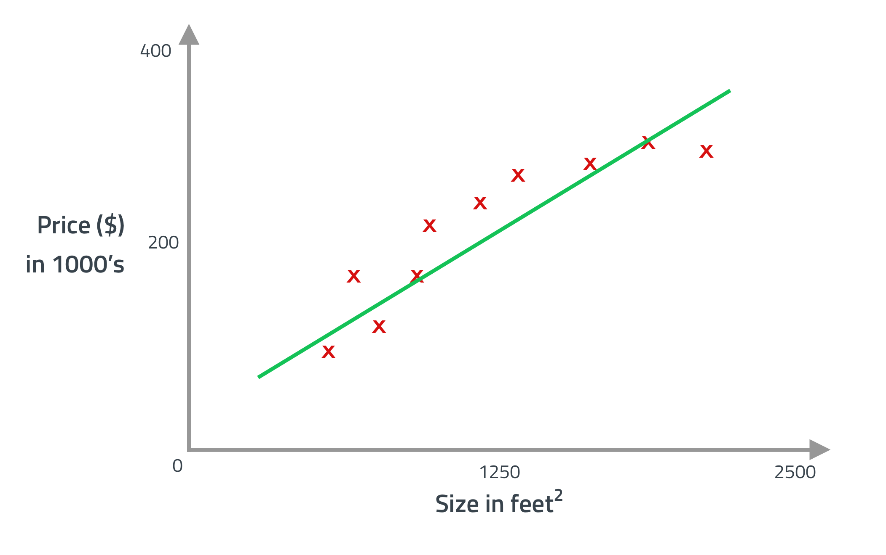
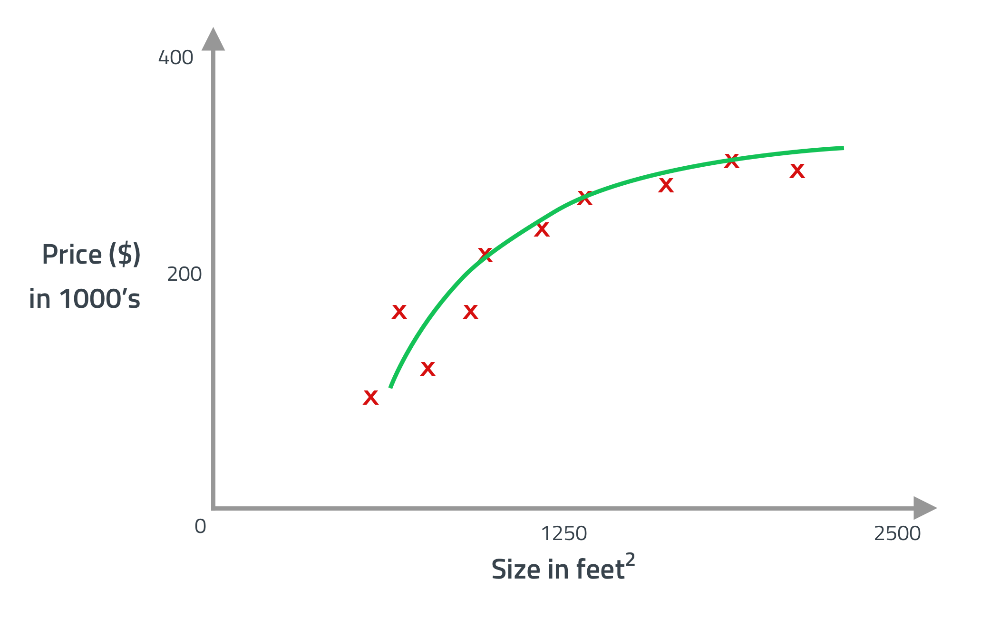

Disclaimer: The information and graphics here are mainly taken and summerized from the Stanford machine learning course by Andrew Ng.
Chances are high that you use machine learning every day without knowing it. Everytime you search with Google, get recommended articles on Amazon or send a letter via post you get the results because of machine learning. But lets jump straight to knowledge.
Supervised learning
When you have a dataset like shown here you could apply different leadning algorithms. One would be to find a straight line that matches the dataset to make predictions like so: House price prediction  With this prediction a house with the size of 750 square feet would cost around $150,000.
But maybe it is better to use a different learning algorithm like a quadratic polinomial function which would output a prediction like so: House price prediction  This would lead to a prediction around $200,000 for a house of 750 square meter. Both examples are using supervised learning which refers to the fact, that “correct answers” are given. It is also a regression problem, which means it predicts a continuous valued output (price).